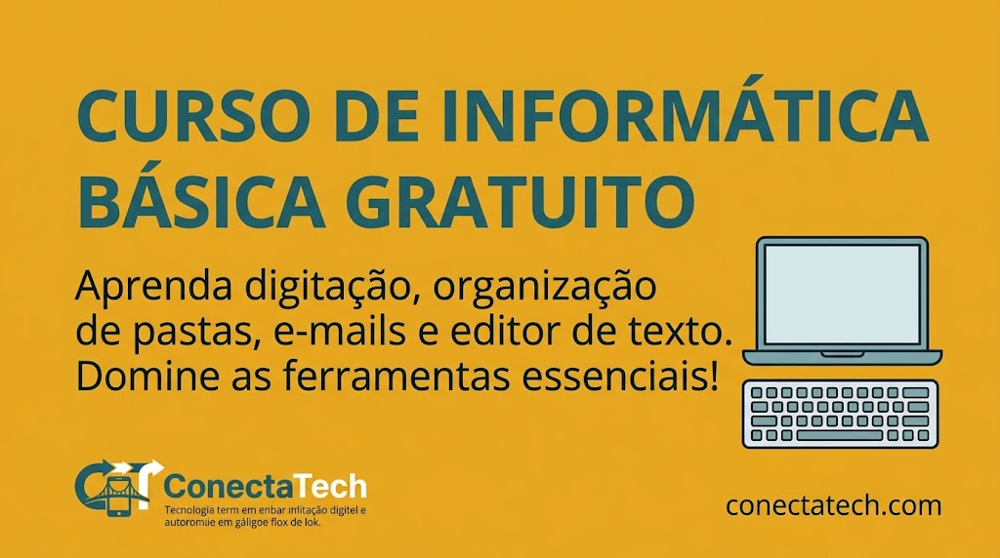
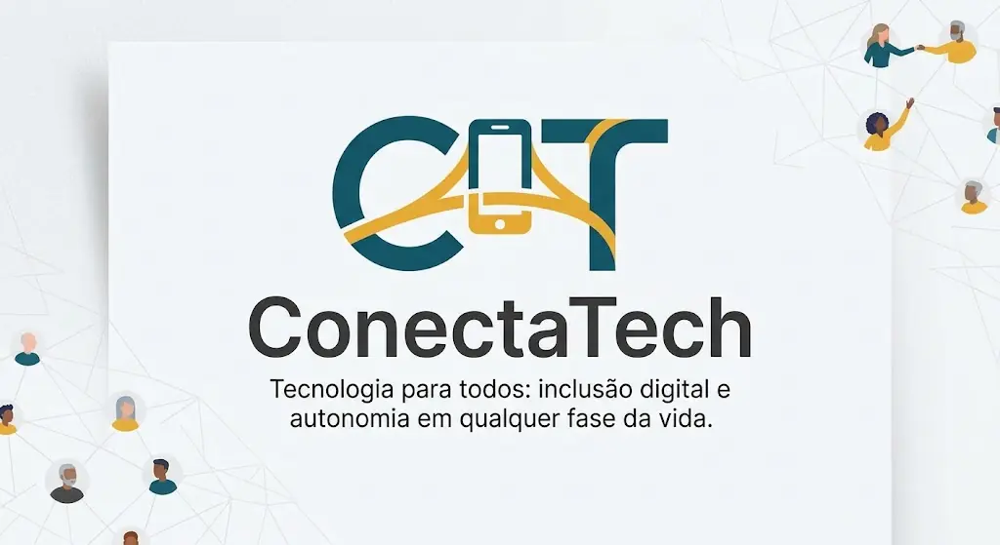

{kind=link}

Curso de informática básica
Curso gratuito para aprender digitação, organização de pastas, uso de e-mails e editor de texto.
Quero participar do curso
Conheça as iniciativas da ConectaTech para ampliar o acesso à tecnologia e criar oportunidades na comunidade.

Curso gratuito para aprender digitação, organização de pastas, uso de e-mails e editor de texto.
Quero participar do cursoOficina de segurança digital para usar o PIX com atenção, identificar mensagens suspeitas e proteger senhas.
Antes de fazer uma transferência, confira o destinatário. Se receber uma mensagem pedindo dados em nome do banco, procure o canal oficial da instituição.
Quero participar da oficinaCompartilhe seus conhecimentos de tecnologia para apoiar a inclusão digital na comunidade. Estudantes, profissionais e pessoas interessadas em tecnologia podem participar.
Quero ser mentorVoluntários ajudam a compartilhar conhecimentos de tecnologia e acompanham participantes nas atividades de inclusão digital.
As doações ajudam a ampliar o acesso da comunidade à tecnologia. A ConectaTech prevê duas formas de apoio:
Equipamentos de informática recebidos podem ser avaliados e recondicionados para apoiar laboratórios comunitários e atividades de estudo. A equipe deve confirmar quais itens aceita e como funciona a entrega antes da doação.
O canal oficial para contribuições financeiras ainda precisa ser informado pela organização. Não realize transferências com base em dados não confirmados.
{kind=link}
{kind=link}